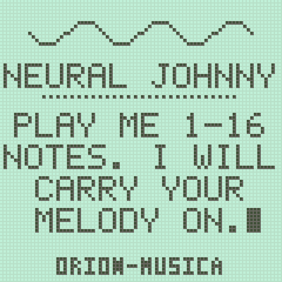

Manual
Neural Johnny 0.1 BETA for the M-VAVE FM-1. Built on FM1 Open V14.
1. First start
After installing, the FM-1 restarts on the start screen: NEURAL JOHNNY, PLAY ME 1-16 NOTES. I WILL CARRY YOUR MELODY ON., a blinking cursor and ORION-MUSICA. Nothing plays yet: Johnny waits for your idea. While it waits, the key and button lights spark slowly.

2. The panel
| Control | Does |
|---|---|
| Keys | Play a melody: the first one, or a new one at any time. |
| PRESETS | SOUND: the melody's sound evolves. |
| K1 | FILTER: low-pass to the left, high-pass to the right. |
| K2 | DRIVE: saturation. |
| K3 | MUTATE: how much the model changes every repeat. |
| K4 | NOTES: sparser or busier answers. |
| SELECT | TEMPO, 118 to 140 BPM. |
| ALGORITHM | LENGTH of the melody's notes. |
| MASTER | Volume. |
| FX … REC | 11 drum pads (section 10). |
| OCT− / OCT+ | Mute sounds one by one / bring them back; both held: one sound alone (section 11). |
| HOME | Stop and go back to the start screen. All knobs go back to their start values. |
The knobs, pads and OCT buttons only work while music plays, not on the start screen: start with a melody.
3. Playing your melody
Play 1 to 16 notes. The first note starts a silent clock at 132 BPM; it becomes the first sixteenth of bar 1. Every note you play is snapped to the nearest sixteenth, so you do not need perfect timing. You hear your notes as you play them, and every key you press sends a light impulse along the keyboard.
Johnny decides your melody is finished when one of these happens:
- you leave 4 silent sixteenths before a bar line;
- your melody ran to the end of its bar and nothing follows in the first three sixteenths of the next one;
- you played 16 notes;
- you filled 2 whole bars.
4. The answer
Right on the next sixteenth the model plays its answer, the same length as your melody: a 1-bar melody gets a 1-bar answer (a 2-bar loop), a 2-bar melody gets a 2-bar answer (a 4-bar loop). Then your melody and the answer loop.
Your notes always stay as you played them. On every repeat the model rewrites one or two steps of its own answer, so the loop is never quite the same. It keeps the answer about as sparse as your melody and now and then drifts back towards its first version, so it develops without wandering off. K3 and K4 change all of this (section 9).
5. Layers and breaths
For the first 8 bars the melody plays alone. Then one sound joins every 8 bars, always on the first beat of an 8-bar phrase:
| Bar | Sound | Plays |
|---|---|---|
| 0 | MELODY | Your melody and the model's answer, FM sound (PRESETS). |
| 8 | KICK | Four on the floor. It also ducks the bass, drone and echo, so the groove pumps. |
| 16 | BASS | A rolling bass on the root of your melody, in one of five patterns. |
| 24 | HATS | Open hats off the beat. |
| 32 | DRONE | Root and fifth, slowly filtered, the hypnotic floor. |
| 40 | CLAP | On 2 and 4. |
| 48 | ECHO | Some of the melody's notes again, a dotted eighth later and an octave up. |
| 56 | PERC | A metallic Euclidean pattern on the root and fifth. |
Once a few sounds play, they start taking breaths: one sound rests for 1, 2 or 4 bars and comes back exactly on the next 8-bar line. A sound that has just come in does not rest straight away. With five or more sounds in, kick, bass and hats sometimes drop out together for a 4-bar breakdown, and sometimes even the melody holds its breath for a bar.
6. A new melody
Play new notes at any time. Everything keeps playing, the model's melody waits while you play, and as soon as you stop (same rules as in section 3) Johnny carries the new motif on. The bass, drone and perc move to the new root.
After a new melody the sounds that were not in yet no longer come in one by one: each 8-bar line, one of them may join, in any order.
7. Knobs
While you turn a knob, its name and value show at the top of the screen for about a second, then only the lines are left.
| Knob | Label | Range | Start |
|---|---|---|---|
| PRESETS | SOUND 1–64, e.g. HOLLOW>BELL | 64 steps, endless | SOFT |
| K1 | LOW-PASS / FILTER OFF / HIGH-PASS | −100 … +100 in steps of 10 | OFF |
| K2 | DRIVE | 0 … 100 | 0 |
| K3 | MUTATE: FROZEN, CALM, ALIVE, WILD | 0 … 10 | 5 |
| K4 | NOTES: SPARSE, BALANCED, BUSY | −5 … +5 | 0 |
| SELECT | TEMPO | 118 … 140 BPM | 132 |
| ALGORITHM | LENGTH: STACCATO, PLUCK, LEGATO | 15 … 120 % | 55 |
Filter
K1 is a DJ filter on the whole mix. Turn left to close a low-pass: the track gets darker and muffled, down to 160 Hz. Turn right for a high-pass that takes the bass and kick away, up to 2.5 kHz. Back in the middle it is off. Close it over a breakdown and open it on the next 8-bar line.
Drive
K2 saturates the whole mix: warmer at first, rough and loud-feeling at 100. The level is compensated, so it does not just get louder.

8. The evolving sound
PRESETS does not jump between presets. It walks through eight FM timbres, eight small steps from one to the next, 64 positions in all, and round again. Every detent moves the sound a little, so you can stop anywhere between two timbres.
| Sound | Character |
|---|---|
| 1 SOFT | Round, gentle pluck. The start sound. |
| 9 HOLLOW | An octave in the modulator: hollow, woody. |
| 17 BELL | Bright bell, longer ring. |
| 25 GLASS | Thin and glassy, short shine. |
| 33 METAL | Inharmonic, metallic clang. |
| 41 ACID | Strong, fast-closing brightness, dark body. |
| 49 REED | Low modulator, slow fade of brightness: reedy, nasal. |
| 57 VAPOUR | Soft and long, almost a pad. |
The label shows the step and the way it is heading, for example SOUND 12 and HOLLOW>BELL. The sound also applies to the notes you play yourself.

9. Steering the model
K3 MUTATE
| Value | Label | The model |
|---|---|---|
| 0 | FROZEN | Changes nothing: the loop stays exactly as it is. |
| 1–3 | CALM | Sometimes changes one step, and only picks its most likely notes. |
| 4–7 | ALIVE | One or two steps every repeat (the start setting). |
| 8–10 | WILD | Two to four steps every repeat, also less likely notes, and it rarely drifts back. |
Turn it to 0 to lock a loop you love; turn it up for a solo.
K4 NOTES
Left (SPARSE) makes rests more likely and keeps the answer close to your number of notes or fewer. Right (BUSY) lets the answer fill up with more notes than you played. The change shows up over the next repeats, as the model rewrites its answer.
SELECT TEMPO and ALGORITHM LENGTH
Tempo changes at once and keeps everything in time. LENGTH sets how long each melody note sounds, from short STACCATO stabs to LEGATO notes that run into the next.
10. Drum pads
The 11 buttons from FX to REC play drums, as soon as the music runs:
| Button | Drum | Button | Drum |
|---|---|---|---|
| FX | Kick | SAVE | Low tom |
| SCL | Snare | ARP | High tom |
| ENV | Clap | SEQ | Ride |
| LFO | Rim | PLAY | Shaker |
| EDIT | Closed hat (it cuts the open hat) | REC | Cowbell |
| GLO | Open hat |
Tapping a groove works like playing a melody: hits snap to sixteenths, and the same rules decide when you are done (section 3), 1 or 2 bars. Then the groove model plays an answer of the same length and the groove loops on its own, as the ninth sound, GROOVE, on top of Johnny's own drums. Every repeat it flips a hit or two of its answer, where it most wants a change, and keeps the answer about as busy as your groove. The four-on-the-floor kicks of the answer always stay.
While you tap a new groove, the old one waits, so you hear only your hits; when you stop, the new groove takes over. K3 MUTATE and K4 NOTES steer the groove model the same way as the melody model. GROOVE takes breaths like every other sound.
11. Mute and solo (OCT)
| Press | Does | Label |
|---|---|---|
| OCT− | Mutes the sound you hear that came in last. Press again for the one before, down to the last sound, which always stays. The OCT− light stays on while anything is muted. | MUTE PERC |
| OCT+ | Brings back the sound muted last, then the one before. | UNMUTE PERC |
| OCT− + OCT+ held | Only one random sound from those playing stays, for as long as you hold both; breaths are skipped for it. Let go and everything is back exactly as before. The OCT+ light is on while you hold. | ONLY BASS, then ALL BACK |
Press both at about the same moment (within 70 ms) for the hold; a single press acts a moment after you press it. The arrangement keeps going underneath: new sounds still come in and take breaths while others are muted.
12. The screen
The screen is an 80 × 80 grid of square pixels in two shades of green, like an old phone. Every sound is one oscillator line across the middle; the lines overlap. Each line has its own shape (soft wave for the melody, slow swell for the kick, saw for the bass, noise for hats and clap, square for the perc, pulses with grit for your GROOVE) and swings with its sound's volume. The melody's line gets more waves the higher the note. A sound that rests loses its line until it comes back.

13. Neural lights
All 41 lights take part: the 27 keys and the 14 buttons. They are on or off, so Johnny draws with movement. Impulses run along the keys and, now and then, branch over to the button row, like signals in a net of neurons.
| Sound | Light |
|---|---|
| MELODY | Two impulses leave the key of the note, left and right. |
| BAR LINE | With the kick in: a wave through the keys one way, the buttons the other. |
| KICK | A short, fast burst somewhere on the keys. |
| BASS | The key of the root note blinks. |
| HATS, PERC | Single lights fire for a moment. |
| CLAP | An impulse along the buttons. |
| ECHO | A slower impulse on the buttons. |
| YOUR NOTES | Impulses from the key you play. |
| DRUM PADS | The pad's own light flashes on each of its hits, yours and the model's. Kick, snare and clap also send a small impulse. |
| OCT− / OCT+ | Steady while sounds are muted / while a solo is held. |
| START SCREEN | Slow, quiet sparks. |
14. How the models work
The model is a small neural network (a multilayer perceptron) with about 8,400 weights stored as 8-bit integers; it runs on the FM-1 itself: about 8,400 multiply-adds for each step it writes. For each sixteenth it looks at the last four steps, the steps half a bar, one bar and half the loop back, the last note played, and where it is in the bar, and gives a probability for every possible next step: a rest, or a note from an octave below to two octaves above the root.
Johnny then keeps only the notes in the key of your melody and within a few semitones of its range, adjusts the odds with K3 and K4, and draws one. The root and key come from your melody: the note you play most, first and lowest, in the minor-type scale that holds all of your notes.
The groove model is a second, smaller network (about 4,400 weights). For each sixteenth it looks at each drum's hits one, two, four, eight and sixteen steps back and half a loop back, which drums you used, and where it is in the bar, and gives every drum its own chance to hit. Drums you did not play join only when it is very sure. It was trained on rule-built techno grooves: four-on-the-floor and broken kicks, backbeats, off-beat and sixteenth hats, syncopated rims and cowbells, tom fills at the end of a phrase.
The melody model was trained on a rule-built collection of hypnotic techno motifs: minor, phrygian and dorian modes, pedal tones, arpeggios, short cells repeated with small changes, answers that land on the root or the fifth. The training script in the source (johnny/tools/train_model.py) can mix in your own loops from johnny/data/.
15. Troubleshooting
Nothing plays
Turn MASTER up and play a few notes. Johnny plays nothing before your first melody.
The answer starts too early or too late
Johnny decides you are done after a short gap. If it starts while you still want to play, keep playing: the new notes become a new melody. To play a longer idea, keep notes going into the second bar.
It never changes
K3 is on 0 (FROZEN). Turn it up.
It is too busy or too empty
Turn K4 left for fewer notes, right for more. Give it a few repeats.
Everything sounds dull or thin
K1 is not in the middle. Turn it back to FILTER OFF.
The pads do nothing
Pads work once the music runs. Play a melody first.
Some sounds are gone
You muted them with OCT− (its light is on). Press OCT+ until ALL SOUNDS ON.
Back to the start
HOME stops the music, clears the melody and resets every knob.